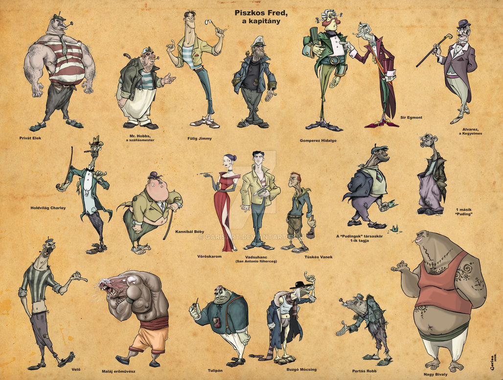

Rejtő Jenő

Élete
Rejtő Jenő (született Reich Jenő, írói álnevei: P. Howard, Gibson Lavery) (Budapest, Erzsébetváros, 1905. március 29.[1] Jevdakovo(wd), Kamenkai járás, Voronyezsi terület, Szovjetunió, 1943. január 1.)
magyar író, kabaré- és színpadi szerző, forgatókönyvíró, a magyar szórakoztató irodalom legnépszerűbb képviselője.
Legismertebb művei látszatra ponyvaregények, azonban életművét manapság már az irodalmi körök is nagyra értékelik[forrás?]. Kamaszkorában verseket írt (ezeket nem publikálta),
majd 1928-tól komor hangulatú novellákat adott közre a napisajtóban. Az 1930-as évek elején kabarédarabokkal és bohózatokkal jelentkezett a pesti színpadokon. Ezzel egyidőben füzetes
ponyvákat, majd operetteket, végül részben külföldi utazásai során szerzett élményeire támaszkodva kalandregényeket alkotott. Sajátos stílusát egyéni, bizarr humor,
„váratlan abszurd fordulatok, szürreális, gyakran kispolgári figurák és a társadalom fanyar humorba csomagolt kritikája”[2] jellemezte. Legnagyobb sikereit P. Howard álnéven írott
regényparódiáival aratta, olvasottsága[3] a Kádár-korban Jókai Móréval vetekedett. A pesti művészi élet ismert alakja volt, barátság fűzte a kor jelentős művészeihez, így például
Karinthy Frigyeshez, Kabos Gyulához, Salamon Bélához, Latabár Kálmánhoz is.[4]
Művei
Pesti történetek (posztumusz kiadva)
- Ezen egy éjszaka (Kabos Gyulának ajánlva, megj. 1969, Albatrosz könyvek)
- A boszorkánymester (megj. 1970, Albatrosz könyvek)
És még sok másik...
Híres alakok

Buzgó Mócsing, az igazi Trebitsch, részeges tengerész (nevét Rejtő valós személytől vette)[235]
Fülig Jimmy szállásmester („fregattfőhadnagy”), majd első tiszt, egy ideig a Boldogság-sziget nevű állam uralkodója, rendszeresen naplót vezet, „helyesírása”
(ami nem éppen helyes)
messze földön híres. Meggyőződése, hogy a jómód és az ízlés legjobb kifejezője egy bőrkamásli és egy lornyett, mely mindenki más számára idétlen viselet. Összeférhetetlen
Piszkos Freddel, az öreg kapitány rengetegszer becsapta, mégis sokszor összeállnak különböző alkalmakkor a haszon reményében, legyen az életmentő akció vagy csatahajólopás.
Piszkos Fred,
a kapitány
egykori fregattkapitány, Fülig Jimmy örökös bajbakeverője. Mindig magánál hord egy hatalmas revolvert, öltözete egy hatalmas, hónaljban kissé bő nadrág, és egy elnyűtt kapitánysapka.
Karvalyorrú és -körmű alak, aki pénzért bármire hajlandó, kivéve a mosakodást. Kétszínű, lelkivilágáról, ha van neki olyan, keveset tudni. Talán apja a
Boldogság-szigetek trónörökösének, talán megmentett egy egész hajónyi embert is. A szingapúri alvilág mitikus alakja, a „Serény múmiák” klub tagja, ahova rajta
kívül csak egy elvetemült bűnöző tartozik. Legendás tengeri medve, viszont a legdurvább kikötői jasszok is félreállnak, ha közeledik. Igaz, ha rejtőzködni kell,
párját ritkítja ötletekben. Egy alkalommal a San Franciscó-i rendőrség alagsorában lakott, máskor egy poggyászban utazott a Honolulu Star óceánjárón.
„Delhiben kilopta
a háromezer éves Buddha rubin szemét, és egy sorompó piros üvegjelzőjével helyettesítette. Nagy botrány lett, mert amikor a Buddha belsejében fellobogott az örömtűz, az
Isten szeme azt hunyorogta a hívők felé, hogy: Stop!... Stop!... Stop!”
Senki Alfonz, Tuskó Hopkins és Csülök (John Fowler) három idegenlégiós, többször megmentették Franciaország becsületét.
Potrien őrmester, Senki Alfonz, Tuskó Hopkins és Csülök ugratásainak állandó célpontja.
Török Szultán (Boulanger úr), akinek valódi „barátsága” a mai napig kérdéses.
Nagy Levin, akiről senki se sejti, hogy miért híres.
Galamb (Jules Manfred Harrincourt), a törhetetlen légiós, aki meg akar halni (persze nem sikerül neki), egészen addig, amíg nem találkozik Magde Russellel, azután meg kell
oldania barátaival a Szahara-vasút problémáját, sőt egy lázadást is le kell vernie.
Troppauer Hümér: érzékeny lelkű, mindemellett bivalyerős költő. Költészete kevés megértésre talál környezetében.
Wagner úr: Előéletéről keveset tudni. Valamikor a telegráf feltalálása előtt részegedett le, azóta szinten tartja magát. Egy hatalmas pofontól egyszer belezuhant egy kád
zománcfestékbe, azóta kék szakállal járja a világot. Néha operarészleteket énekel, mindenkit Sztrovacseknek hív. Egy expedícióra az összes eszköz, amit magával vitt egy csokor
száraz virág és egy kajütajtó volt.
[1]Születése bejegyezve a Budapest VII. ker. polgári születési akv. 976/1905. folyószáma alatt; hasonmásban közreadva (Budapest Főváros Levéltára): Az ellopott tragédia.
Rejtő Jenő-emlékkötet; PIM Infopoly, Bp., 2015, 333. old.
[2]1905. március 29. Rejtő Jenő születése. www.rubicon.hu. (Hozzáférés: 2016. szeptember 1.)
[3]Magyar Elektronikus Könyvtár (MEK) / Hungarian Electronic Library. mek.oszk.hu. (Hozzáférés: 2016. szeptember 1.)
[4]Hetven éve halt meg Rejtő Jenő. Könyves Blog (2013) (Hozzáférés: 2017. feb. 7.)
forrás